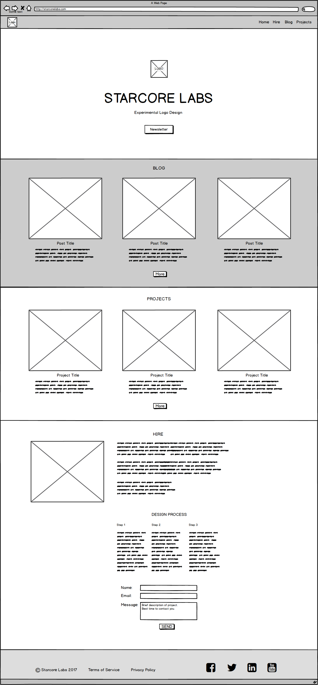

Starbase Wordpress Theme
This is a screenshot from the completed Starbase Wordpress Theme I designed and made from scratch.
In December of 2017 I decided I wanted a custom theme for my freelance graphic design business. I spent 3 weeks wireframing, prototyping, and then coding it.
I made a YouTube series called Wireframe to Wordpress showing how I did it.
I enjoyed the wireframing part the most. It was fun thinking about where to position the components for each page. I kept in mind how my users would interact with the overall site.

While creating the prototype I had to consider how Bootstrap and Wordpress works. Their strengths and limitations. These insights helped me create specific and general page templates that Wordpress would use for displaying content.
Overall I’m happy with my Starbase Theme. Unfortunately, due to a few factors: cost, security issues, and people mistaking my website for a large “brick-and-mortar” corporate company. (Which I suspect is because of my 6 years of experience designing those types of sites.)
I decided to switch my portfolio to a static site hosted on Github Pages.